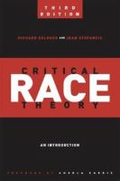

Contemporary Publications
Critical race theory itself undermines the very people it claims to help. This occurs on multiple fronts. It undermines peoples’ capacity for critical thinking. It teaches people to view the world through racism and sexism (e.g., white males are to blame) and promotes everything critical race theorists claim to be abolishing. It teaches guilt and victim (oppressor and oppressed) mentalities that promote adversarial and divisive social interactions. Critical race theory seeks to consume consciousness so that people are looking for prejudice everywhere, even where none exists. It teaches that rigorous scientific method and objectivity are evidence of "whiteness." There is actually a "Math is Racist" movement funded in part by The Bill and Melinda Gates Foundation, which literally proves the prejudiced tenets of critical race theory (e.g., nonwhites are incapable of learning high math and only whites succeed). Math and reading are the two areas where many students are falling behind the most. So the plan is to exacerbate that failure and dumb down the student body? Critical race theorists claim that they are advancing the Civil Rights Act while also claiming that it’s too colorblind and neutral. They contradict themselves and use circular arguments to "prove" racism. (See Kendi's statements below. A circular argument assumes what it attempts to prove.) Authors of the following publications provide statements that are objective evidence of their motives and intentions, yet DiAngelo claims that objectivity is not desirable or even possible. That mentality serves her and academics like her, but not students. In conclusion, academics are getting away with using "antiracism" to deflect from their blatant racism and to circumvent the law, but students are not supposed to notice because of the PhDs after their names.

In 1995, Derrick Bell published "Who’s Afraid of Critical Race Theory?" In this essay, Bell says that critical race theory "is often disruptive because its commitment to anti-racism goes well beyond civil rights, integration, affirmative action, and other liberal measures."

In 2001, Richard Delgado and Jean Stefancic published Critical Race Theory: An Introduction. In it Delgado writes, "Unlike traditional civil rights discourse, which stresses incrementalism and step-by-step progress, critical race theory questions the very foundations of the liberal order, including equality theory, legal reasoning, Enlightenment rationalism, and neutral principles of constitutional law."
In 2002, Duncan Kennedy published "The Critique of Rights in Critical Legal Studies" where Kennedy writes that "in the United States, by the end of the 1970s, with the rise of identity politics, left discourse merged with liberal discourse, and the two ideas of the rights of the oppressed and the constitutional validity of their legal claims superseded all earlier versions of rightness."

In 2011, Robin DiAngelo and Ozlem Sensoy published Is Everyone Really Equal? In it they write, "An approach based on critical theory calls into question the idea that objectivity is desirable or even possible."
In 2018, Robin DiAngelo published White Fragility. In it she writes, "White supremacy is a descriptive and useful term to capture the all-encompassing centrality and assumed superiority of people defined and perceived as white and the practices based on this assumption. White supremacy in this context does not refer to individual white people and their individual intentions or actions but to an overarching political, economic, and social system of domination. Again, racism is a structure, not an event."
In 2019, Ibram X. Kendi Published How to be an Antiracist. Kendi’s definition of racism and anti-racism in his own words are: "I would define [racism] as a collection of racist policies that lead to racial inequity that are substantiated by racist ideas. And anti-racism is pretty simple using the same terms. Anti-racism is a collection of anti-racist policies leading to racial equity that are substantiated by anti-racist ideas."